| [ Team LiB ] |
|
M5.3 Steady-State and Dynamic Behavior (Chapter 3)At steady state, the component A balance yields a quadratic expression, 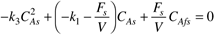 where the subscript s is used to indicate the steady state value. Solving this quadratic and using the positive root (clearly, there cannot be negative concentrations), we find 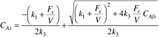 and solving for the steady-state concentration of B, 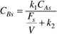 Using these two expressions, we can find the steady-state input-output curve relating CBs and Fs/V. Here we consider the dilution rate (F/V) to be the manipulated input. The main advantage is that it is independent of scale (reactor volume). Whether the reactor is 1 or 10,000 liters, the same dilution rate will yield the same concentrations (assuming the feed stream is the same composition). For the particular reaction under consideration, the rate constants are 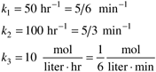 and the steady-state feed concentration is CAfs = 10 gmol/liter. Steady-State Input-Output CurveNotice that this process has a nonlinear relationship between the steady-state dilution rate (F/V) and the steady-state concentration of B (Figure M5-2). There exists a maximum concentration of B that can be achieved. It is interesting to note that the reactor can not be controlled at this maximum point because the process gain is zero. For a given desired value of the concentration of B (as long as it is less than the maximum possible value), there are two dilution rates that can achieve the concentration. This is known as input multiplicity. Figure M5-2. Steady-state input-output curve. The dotted lines indicate two possible flow rates to achieve a concentration of 1.117 gmol of B/liter.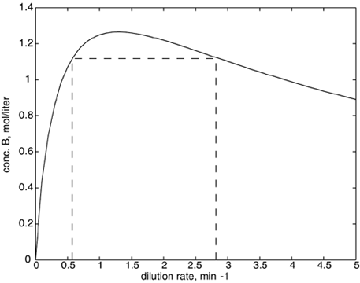 In this example, a steady-state concentration of B of 1.117 gmol/liter can be obtained with either Fs/V = 0.5714 min-1 (case 1) or Fs/V = 2.8744 min-1 (case 2). Notice that the process gain (slope of the steady-state input-output curve) is positive for case 1 and negative for case 2. For controller design, it is clearly important to know whether you are operating on the left-hand side (e.g., case 1) or right-hand side (e.g., case 2) of the "peak," since the sign of the controller gain must be the same sign as the process gain. Also notice that a steady-state concentration greater than 1.266 gmol/liter cannot be achieved regardless of the controller used. Linear AnalysisThe linear state space model is 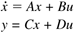 where the states, inputs, and output are in deviation variable form. The first input (dilution rate) is manipulated and the second (feed concentration of A) is a disturbance input. 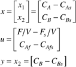 You should linearize the two modeling equations at steady-state solution to find the following state space matrices: 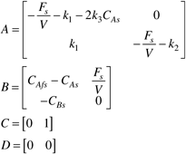 Case 1—Operation on the "Left-Hand Side" of the Peak ConcentrationBased on the steady-state operating point of CAs = 3 gmol/liter, CBs = 1.117 gmol/liter, and Fs/V = 0.5714 min-1, the state space model is 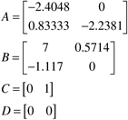 The manipulated input-output process transfer function for the reactor is [you can find this analytically, using G(s) = C(sI-A)-1B, or numerically, using Module 4] 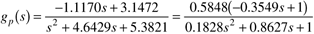 and the disturbance input-output transfer function is 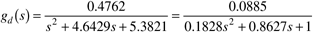 The responses of the linear and nonlinear models to a step change in F/V of 0.1 min-1 are compared in Figure M5-3. Figure M5-3. Comparison of concentration of B response to step change in F/V of 0.1 min-1. Nonlinear (solid) vs. linear (dashed).
Note: A motivated reader may wish to demonstrate that the linear and nonlinear models have the same response for a step change of 0.01 min-1, while the differences in response to a step change of 0.5 min-1 are substantial. Function files for integration of the nonlinear model are presented in Module 3. The focus of the current module is on responses of the linear model. |
| [ Team LiB ] |
|